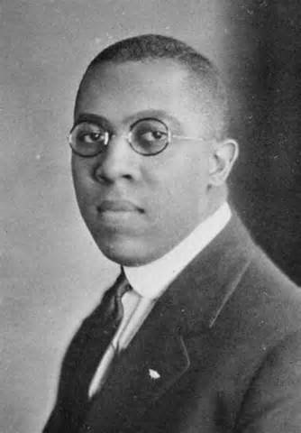

David Crosthwait

David Crosthwait foi um engenheiro afro-americano especializado em sistemas de aquecimento, ventilação e ar-condicionado (HVAC). Ele projetou sistemas avançados para edifícios famosos, incluindo o Radio City Music Hall e o Rockefeller Center. Crosthwait também detinha mais de 39 patentes relacionadas à tecnologia de climatização e controle de temperatura.
Principais Contribuições
- Desenvolveu tecnologias inovadoras para sistemas de aquecimento e ventilação.
- Projetou sistemas HVAC para o Radio City Music Hall e o Rockefeller Center.
- Deteve mais de 39 patentes relacionadas à climatização.
- Primeiro afro-americano a receber o título de Fellow da American Society of Heating, Refrigeration, and Air-Conditioning Engineers (ASHRAE).
Saiba mais
Voltar